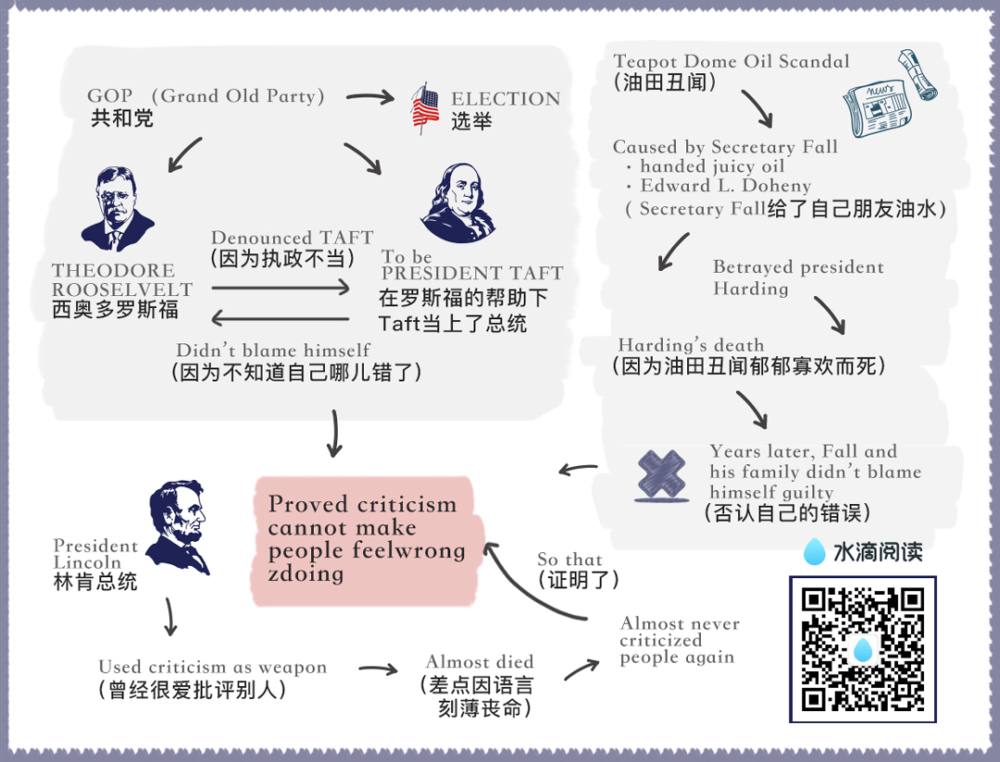

chapter1.2
You will find examples of the futility of criticism bristling on a thousand pages of history, Take, for example, the famous quarrel between Theodore Roosevelt and President Taft—a quarrel that split the Republican party, put Woodrow Wilson in the White House, and wrote bold, luminous lines across the First World War and altered the flow of history.

Let's review the facts quickly.
When Theodore Roosevelt stepped out of the White House in 1908, he supported Taft, who was elected President.
Then Theodore Roosevelt went off to Africa to shoot lions.
When he returned, he exploded.
He denounced Taft for his conservatism, tried to secure the nomination for a third term himself, formed the Bull Moose party, and all but demolished the G.O.P.
In the election that followed, William Howard Taft and the Republican party carried only two states—Vermont and Utah.
The most disastrous defeat the party had ever known.
Theodore Roosevelt blamed Taft, but did President Taft blame himself?
Of course not, with tears in his eyes, Taft said: "I don't see how I could have done any differently from what I have."
Who was to blame? Roosevelt or Taft? Frankly, I don't know, and I don't care.
The point I am trying to make is that all of Theodore Roosevelt's criticism didn't persuade Taft that he was wrong.
It merely made Taft strive to justify himself and to reiterate with tears in his eyes: "I don't see how I could have done any differently from what I have."
Or, take the Teapot Dome oil scandal.
It kept the newspapers ringing with indignation in the early 1920s.
It rocked the nation!
Within the memory of living men, nothing like it had ever happened before in American public life.
Here are the bare facts of the scandal:
Albert B. Fall, secretary of the interior in Harding's cabinet, was entrusted with the leasing of government oil reserves at Elk Hill and Teapot Dome oil reserves that had been set aside for the future use of the Navy.
Did secretary Fall permit competitive bidding? No sir.
He handed the fat, juicy contract outright to his friend Edward L. Doheny.
And what did Doheny do?
He gave Secretary Fall what he was pleased to call a "loan" of one hundred thousand dollars.
Then, in a high-handed manner, Secretary Fall ordered United States Marines into the district to drive off competitors whose adjacent wells were sapping oil out of the Elk Hill reserves.
These competitors, driven off their ground at the ends of guns and bayonets, rushed into court—and blew the lid off the Teapot Dome scandal.
A stench arose so vile that it ruined the Harding Administration, nauseated an entire nation, threatened to wreck the Republican party, and put Albert B. Fall behind prison bars.
Fall was condemned viciously—condemned as few men in public life have ever been.
Did he repent? Never!
Years later Herbert Hoover intimated in a public speech that President Harding's death had been due to mental anxiety and worry because a friend had betrayed him.
When Mrs. Fall heard that, she sprang from her chair, she wept, she shook her fists at fate and screamed: "What! Harding betrayed by Fall? No! My husband never betrayed anyone.
This whole house full of gold would not tempt my husband to do wrong.
He is the one who has been betrayed and led to the slaughter and crucified."
There you are; human nature in action, wrongdoers, blaming everybody but themselves.
We are all like that.
So when you and I are tempted to criticize someone tomorrow, let's remember Al Capone, "Two Gun" Crowley and Albert Fall.
Let's realize that criticisms are like homing pigeons.
They always return home.
Let's realize that the person we are going to correct and condemn will probably justify himself or herself, and condemn us in return; or, like the gentle Taft, will say: "I don't see how I could have done any differently from what I have."
On the morning of April 15, 1865, Abraham Lincoln lay dying in a hall bedroom of a cheap lodging house directly across the street from Ford's Theater, where John Wilkes Booth had shot him.
Lincoln's long body lay stretched diagonally across a sagging bed that was too short for him.
A cheap reproduction of Rosa Bonheur's famous painting The Horse Fair hung above the bed, and a dismal gas jet flickered yellow light.
As Lincoln lay dying, Secretary of War Stanton said, "There lies the most perfect ruler of men that the world has ever seen."
What was the secret of Lincoln's success in dealing with people?
I studied the life of Abraham Lincoln for ten years and devoted all of three years to writing and rewriting a book entitled Lincoln the Unknown.
I believe I have made as detailed and exhaustive a study of Lincoln's personality and home life as it is possible for any being to make.
I made a special study of Lincoln's method of dealing with people.
Did he indulge in criticism? Oh, yes.
As a young man in the Pigeon Creek Valley of Indiana, he not only criticized but he wrote letters and poems ridiculing people and dropped these letters on the country roads where they were sure to be found.
One of these letters aroused resentments that burned for a lifetime.
Even after Lincoln had become a practicing lawyer in Springfield, Illinois, he attacked his opponents openly in letters published in the newspapers.
But he did this just once too often.
In the autumn of 1842 he ridiculed a vain, pugnacious politician by the name of James Shields.
Lincoln lamed him through an anonymous letter published in Springfield Journal.
The town roared with laughter.
Shields, sensitive and proud, boiled with indignation.
He found out who wrote the letter, leaped on his horse, started after Lincoln, and challenged him to fight a duel.
Lincoln didn't want to fight.
He was opposed to dueling, but he couldn't get out of it and save his honor.
He was given the choice of weapons.
Since he had very long arms, he chose cavalry broadswords and took lessons in sword fighting from a West Point graduate; and, on the appointed day, he and Shields met on a sandbar in the Mississippi River, prepared to fight to the death;but, at the last minute, their seconds interrupted and stopped the duel.
That was the most lurid personal incident in Lincoln's life.
It taught him an invaluable lesson in the art of dealing with people.
Never again did he write an insulting letter.
Never again did he ridicule anyone.
And from that time on, he almost never criticized anybody for anything.